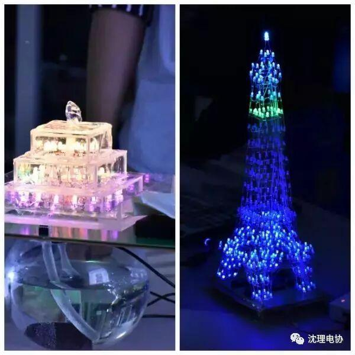
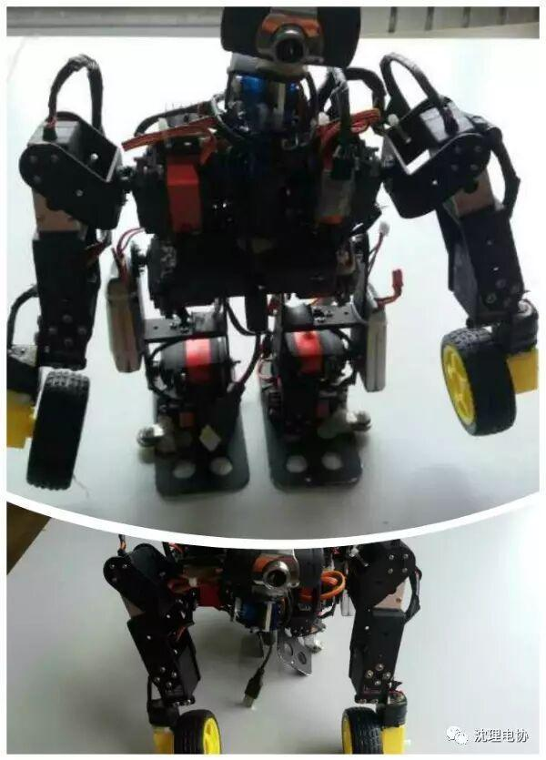
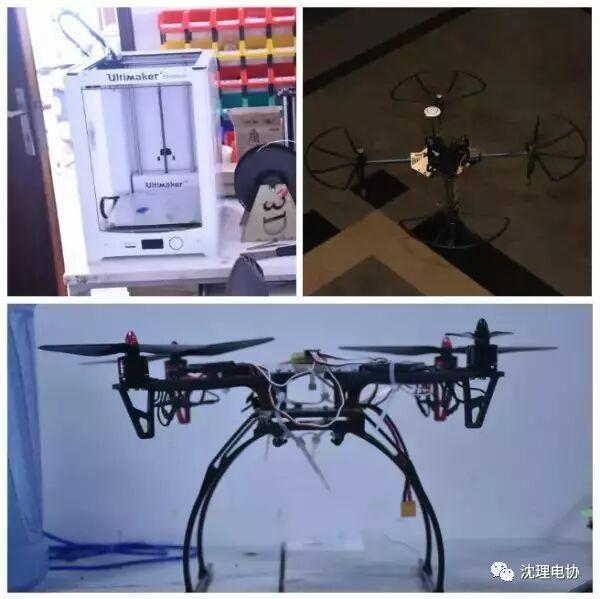
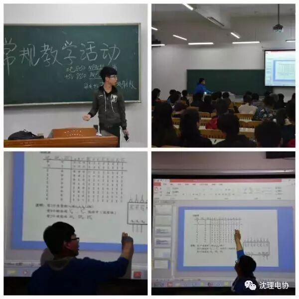
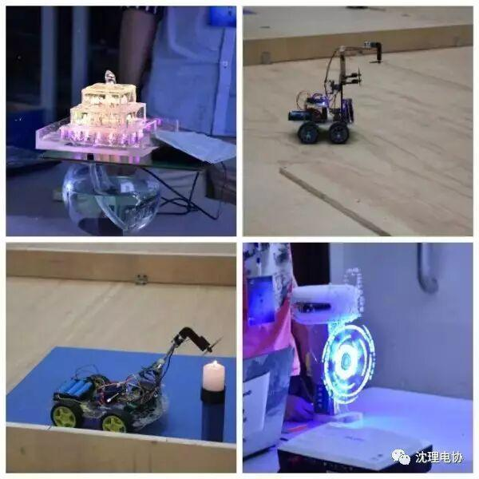
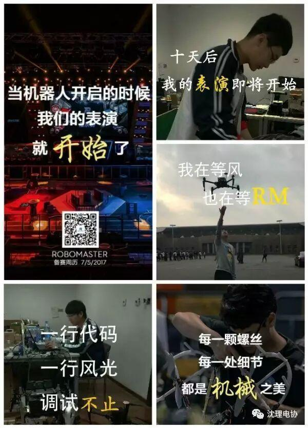
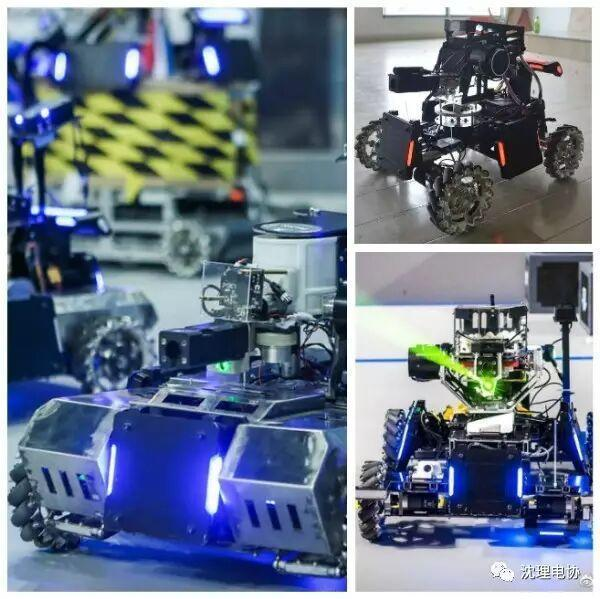

助你了解电协！
针对学弟学妹们的疑问做下介绍：
1.电子技术与应用协会，简称电协是沈阳理工大学里技术雄厚的学术类社团。社团涉足方向包括，电子，机器人，无人机，3d打印，创新创业，科技制作，视觉识别，软件开发，硬件编程等多个方向。



2.社团包括行政部门5个:办公室，信息部，外联部，人事部，财务部，在这里你能得到和其他学生组织一样的行政锻炼机会，包括3个技术部门：硬件电控，机械设计，软件开发。
3.正式招新时间为十月中旬，届时将有详尽的入会指引，请学弟学妹不用担心不知道怎么加入。招新无考核。行政部门选拔需要经过面试。
4.正式招新后每周都会有固定时间的教学活动帮助学弟学妹逐步提高。对于技术实力强大的同学进行考核选拔进入技术部进行强化训练。(无论是否为技术部成员所享受会员权利相同)

5.电协每年组织参加的比赛很多



你想了解这些比赛吗？敬请关注下次推送！

沈理电协
微信号：sylgdzxh
编辑：王宁